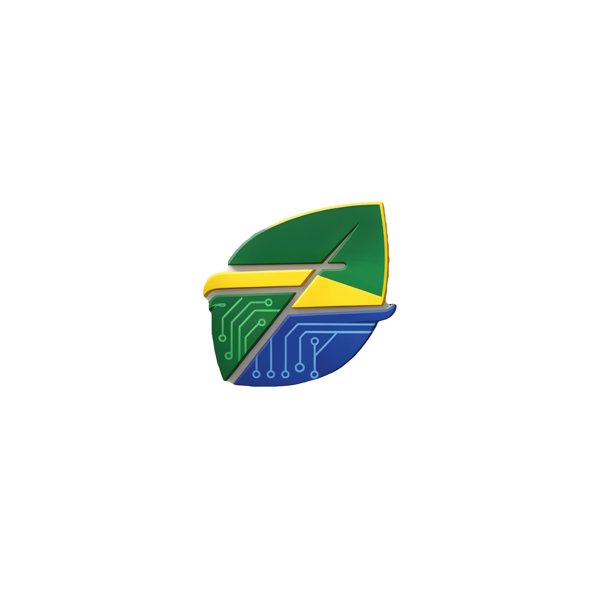

O que você entrega quando o diploma deixa de ser o diferencial.
29 de outubro · 14h30 IEL Mato Grosso · Feira de Empregos da Indústria e do Comércio · Unisenai Cuiabá
Renato de Oliveira Rosa · Cerrado Finanças & Tech
@cerradofinancas · www.cerradofinancas.com.br

Cerrado Finanças & Tech
A tese da conversa
Currículo é estoque. IA é fluxo.
O mercado não paga pelo que você acumulou. Paga pelo que você entrega com o que acumulou.
Cerrado Finanças & Tech
Trajetória
Não foi uma linha reta. Foi uma espiral.
01
Construir
Programador autodidata aos 15 anos. Software antes de diploma.
02
Entender o negócio
Consultorias em sistemas de gestão financeira. Administração e ADS.
03
Controlar
Europa, ERP e controladoria: da ferramenta para a decisão.
04
Ensinar
Mestrado UFPR, empresa própria e pós-graduação no MT.
Cerrado Finanças & Tech
De 15 anos até aqui
O que veio antes do título
01
15 anos
Programador sozinho. Primeiros softwares e primeiros clientes.
02
Consultorias
Sistemas de gestão financeira: processo, implantação e treinamento.
03
Administração + ADS
Uma graduação para o porquê, outra para o como.
04
Europa
Desenvolvimento do ERP da empresa. Software em escala.
05
Controladoria
Sair da TI vista como suporte para a área que entrega decisão.
06
Mestrado UFPR
Método: pergunta, evidência, contradição. O que o código não dá.
07
Cuiabá
Controladoria e compliance em empresas daqui.
08
Empresa própria
Software, contabilidade e gestão no mesmo lugar.
09
Pós-graduação
Os principais cursos de pós de Mato Grosso.
Cerrado Finanças & Tech
Antes do currículo
Todo currículo começou como um sonho.
O sonho não é o destino. É a bússola: mostra para onde virar quando aparece uma escolha.
Escreva
Coloque o sonho em uma frase. O que não está escrito vira só vontade.
Traduza em problema
Que dor você quer resolver? Sonho de carreira é um problema que você gosta de atacar.
Dê o próximo passo
Um curso, uma conversa, um projeto pequeno. Sonho anda em passos, não em saltos.
Cerrado Finanças & Tech
História profissional
Na sua carreira, tudo conta.
Experiências
Estágio, bico, freela, voluntariado. Toda entrega vira repertório.
Cursos
Faculdade, curso livre, tutorial de madrugada. Estudar sozinho também é formação.
Vida pessoal
Família, mudança de cidade, esporte. Disciplina e resiliência se aprendem fora do crachá.
Tropeços
O projeto que deu errado e o curso que você largou. O que ficou deles também é currículo.
Ninguém liga os pontos olhando para a frente. Liga olhando para trás — por isso vale guardar e contar todos.
Cerrado Finanças & Tech
Hard skills · Soft skills
Hard skill se aprende na sala. Soft skill se aprende no problema.
Nem tudo cabe na grade da escola ou da faculdade. Muito do que te faz contratável vem de lidar com gente, prazo e erro.
Hard skills · técnicas
O que você sabe fazer
Vêm da escola, da faculdade, do curso e da certificação. Dá para medir e provar.
ExcelProgramaçãoContabilidadeIdiomasLegislação
Soft skills · comportamentais
Como você resolve com os outros
Vêm do cliente difícil, do prazo apertado, da família e do erro que foi seu. Ninguém te dá diploma disso.
ComunicaçãoNegociaçãoResiliênciaDecisão sob pressãoTrabalho em equipe
A hard skill te coloca na entrevista. A soft skill te mantém no cargo. E a vida é a escola que mais cobra — e a que mais ensina.
Cerrado Finanças & Tech
Construção de história
Experiência só vira direção quando você sabe contar.
1 · O fato
O que aconteceu
Sem enfeite: onde, quando e qual era o problema.
2 · O aprendizado
O que mudou em você
A habilidade, o método ou o critério que ficou.
3 · A ponte
Onde isso te leva
Como aquilo resolve o problema de quem vai te contratar.
Na prática: a virada que mudou a minha carreira, contada com exatamente esses três passos. →
Cerrado Finanças & Tech
Na prática · a minha virada
TI é suporte quando entrega ferramenta. É estratégia quando entrega decisão.
1 · O fato
Eu entregava sistema
Desenvolvi o ERP de uma empresa na Europa. Software em escala, funcionando.
2 · O aprendizado
Sistema pronto não é resultado
O valor está na decisão que a ferramenta ajuda alguém a tomar.
3 · A ponte
Fui para a controladoria
Saí da TI para a área que decide. Hoje construo ferramenta que prepara a decisão.
Cerrado Finanças & Tech
Mapa mental
Três tipos de IA. Só um é moda.
Chat · generativa
Conversa e produz texto
Rascunho, resumo, explicação de cláusula, resposta difícil.
Limite: alucina, não executa e não conhece o seu processo.
Algorítmica · preditiva
Classifica e prevê
Concilia lançamento, prevê demanda, acha anomalia na folha.
Força: determinística, auditável e roda em hardware modesto.
Agêntica
Planeja e executa
Lê e-mail, classifica, monta minuta, consulta o ERP e para para aprovação.
Limite: erro composto e risco de ação irreversível.
E antes de todas elas existe a automação burra: o script, a regra, o fluxo. Resolve 70% dos casos, custa quase nada e ninguém posta no LinkedIn.
Cerrado Finanças & Tech
Critério de escolha
A tarefa precisa de quê?
Linguagementão useIA de chat
Previsãoentão useIA algorítmica
Execuçãoentão useIA agêntica
Se a tarefa for sempre igual, é automação — e nem chame de IA. A maioria começa pelo agente, porque é o mais bonito. Devia começar pela algorítmica, porque é a que consegue auditar.
Cerrado Finanças & Tech
Doutorado · FUCAPE
Como usar IA sem terceirizar a responsabilidade?
Compliance vive de três coisas. A IA generativa entrega velocidade — e fragiliza as três.
Evidência
O que foi feito, com qual documento e em que data.
Rastreabilidade
De onde veio a informação e por qual caminho ela passou.
Julgamento
Quem decide, quem assina e quem responde pelo erro.
Cerrado Finanças & Tech
A proposição da tese
Copiloto algorítmico
Não é um chatbot que responde. É um segundo par de olhos que prepara a decisão, mostra o caminho e deixa o rastro para o humano assinar.
O mercado vai precisar de quem sabe projetar isso. E não é só programador: é contador, auditor e administrador que entende de processo e de risco.
Demo públicapublicopiloto.web.app
Cerrado Finanças & Tech
Três níveis de autonomia
Quem executa? Quem responde?
Automação
Substitui a mão. Regra fixa, resultado previsível. Falhou, refaz.
Copiloto
Amplia o cérebro. Prepara, cita e registra. O humano decide e assina.
Agente
Assume a tarefa. Exige permissão, limite e auditoria.
Compliance precisa saber qual dos três está rodando — e com qual permissão.
Cerrado Finanças & Tech
Vocabulário que confunde
Do papel à IA: cinco degraus que não são a mesma coisa.
Um exemplo do começo ao fim: a nota fiscal que chega todo dia.
1
Digitalizar
Transformar papel em arquivo. O processo continua o mesmo, só muda o suporte.
Na nota fiscal: escanear a nota e salvar em PDF.
2
Automatizar
Fazer a máquina repetir uma regra fixa, sem ninguém apertar o botão.
Na nota fiscal: todo PDF que chega no e-mail vai sozinho para a pasta do mês.
3jeito de automatizar
Script
Um programa pequeno que executa a regra. É automação feita por código.
Na nota fiscal: um código em Python lê o XML e lança no ERP.
4jeito de automatizar
RPA
Um robô de software que imita os cliques de uma pessoa na tela, quando não há integração.
Na nota fiscal: o robô abre o portal da prefeitura e baixa a nota, campo por campo.
5
Automação por IA
A máquina interpreta o que não tem padrão e sugere o próximo passo. O humano revisa.
Na nota fiscal: lê a nota em qualquer formato, classifica a despesa e avisa se o valor fugiu do normal.
Regra de bolso: se dá para escrever a regra, é script ou RPA. Se precisa interpretar, é IA. E se ainda está no papel, comece digitalizando.
Cerrado Finanças & Tech
Rotina real
IA no dia a dia administrativo
Conciliação bancáriaClassifica lançamentos por histórico e contraparte. O humano revisa só as exceções.algorítmica + chat
Contratos e editaisExtrai partes, prazos, multas, garantias e obrigações para uma tabela comparável.chat com RAG
Folha e eSocialCruza folha, eSocial e contas a pagar para achar inconsistência antes do fisco.algorítmica
Relatório gerencialTransforma extrato e DRE em três parágrafos: o que aconteceu, por que e o que fazer.chat
Rotina invisívelLê e-mail, classifica, monta a minuta e para para você aprovar. Não envia sozinho.agêntica
A IA não fecha o mês. Ela tira o braçal do seu colo para você fazer o julgamento — que é o que ninguém terceiriza.
Cerrado Finanças & Tech
O risco que ninguém posta
Só usar IA também cobra juros.
entrega com IA habilidade própria
Acadêmico
Para de ler a fonte, de escrever e de construir base. Passa a defender o que não entende.
Técnico
Entrega código que não depura, arquitetura que não explica e número que não prova.
Carreira
Quando a ferramenta muda, o diferencial desaparece. A ferramenta vira o seu teto.
Débito cognitivo é o juro que você paga por terceirizar o que deveria aprender. IA é alavanca. Alavanca sem braço não levanta nada.
Cerrado Finanças & Tech
Antídoto
Como pagar essa dívida antes que ela cresça.
Explique sem IA
Se não consegue explicar com as suas palavras, você não aprendeu.
Refaça o núcleo à mão
Use a IA para rascunhar. Depois refaça a parte que importa sem ela.
Volte à fonte
Leia o documento, a norma e o código. A IA é o mapa, não o território.
Caderno de fundamentos
O que você sabe fazer sem consultar. É isso que não pode ser terceirizado.
Quem só delega nunca constrói critério. E sem critério, a IA entrega rápido — mas você não sabe se está certo.
Cerrado Finanças & Tech
O framework que eu uso
Prompt bom não é criativo. É com contexto.
C
Contexto
Quem você é, qual o cenário e qual a regra.
T
Tarefa
O que exatamente deve ser feito.
F
Formato
Tabela, lista, e-mail, JSON, cinco linhas.
E
Exemplo
Um caso resolvido para calibrar o tom.
É igual lançamento contábil: sem histórico, sem documento e sem classificação, ninguém aprova.
Cerrado Finanças & Tech
Diferencial de carreira
Nunca cole dado sigiloso em ferramenta pública.
Se a empresa não tem política, você propõe a política. Isso não é medo de tecnologia: é competência.
Restrição de hardware não é impedimento técnico. É requisito de projeto.
Modelo local menor erra mais que o topo de linha na nuvem. Por isso o desenho é RAG + citação + revisão humana. Não vendemos onisciência. Vendemos rastreabilidade.
Cerrado Finanças & Tech
Comece amanhã
Cinco movimentos. Nenhum deles precisa de diploma.
1
Meça a dor
Volte à tarefa que você odeia e cronometre. Você não automatiza o que não mede.
10 min
2
Suba um modelo local
Ollama, modelo pequeno, uma pergunta com o Wi-Fi desligado.
hoje à noite
3
Escolha o tipo certo
Linguagem, previsão ou execução. Não comece pelo agente: comece pelo que você audita.
esta semana
4
Construa um copiloto, não um oráculo
Uma tarefa, com fonte, incerteza declarada e log.
este mês
5
Publique os três artefatos
Um prompt, uma automação e um caso documentado.
sempre
Cerrado Finanças & Tech
Ecossistema
Marcas que saem da mesma fábrica.
A fábrica
Software sob medida, IA offline, GovTech e PWAs que resolvem dor real de organização pública e privada.
ERPsCRMsIA offlineGovTechPWA
CerraClass
Educação em IA aplicada
Cerra.AI
IA local, com privacidade
CAIM
IDE que roda no celular · caim.web.app
A fábrica é o Cerrado Tech. As outras marcas são o que ela aprende, ensina e devolve para o mercado.
Cerrado Finanças & Tech
2036
Para levar
Daqui a dez anos ninguém vai perguntar se você sabe usar IA. Vão perguntar o que você construiu com ela.
Cerrado Finanças & Tech
Obrigado!
Aponte a câmera e continue a conversa. @cerradofinancas